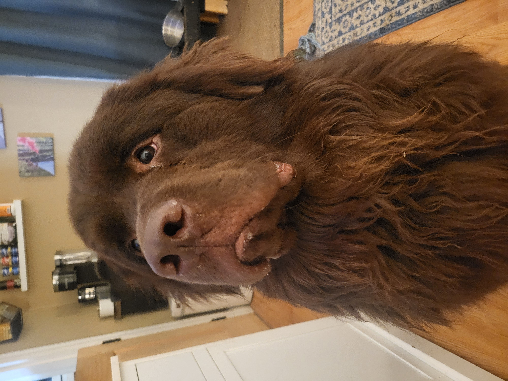

Welcome to Newfie dogs
What Kind Of Dog Is A Newfie?
Newfies are wonderful family dogs with gentle natures and big personalities. Newfie is short for the Newfoundland breed of dogs. They are a very strong water dog that are built for pulling, as many Newfie owners come to find out when first starting leash training since pulling you on the leash feels natural to them. Newfies range anywhere from 140-160lbs when full grown. Newfies have thick coats of fur and were originally bred in Canada for cold water; though, Newfies can adapt to any region of the US. Newfies form strong bonds with their human families and are most happy as indoor dogs. Newfies living in the South only spend short amount of times outside in the Spring and Summer due to the heat. Newfies much prefer either the cold weather of Winter or the comforts of AC indoors.
What Are The Challenges To Making Your Newfies Indoor Dogs?
When you first bring a Newfie puppy in your home or apartment, you won't notice much difference between other dog breeds in the accomodations you must make; You will have the expected furniture chewing and house training that come with all puppies. However, as Newfies grow bigger you will soon realize the challenges of changing your home to accomodate a giant breed dog. Having two Newfies in a home adds to the changes that must be made so that sharing your living room with your giant furry family members is a seamless as possible. Some of the challenges you will face include dust control, vaccuming hairy tumble-weeds on a continual basis, and slobber proofing your couch and the floor around their water bowls. You will find that all these home changes are worth it when your Newfies return the love with their characteristic devotion and lovable adoration that iconically mark their personalities.